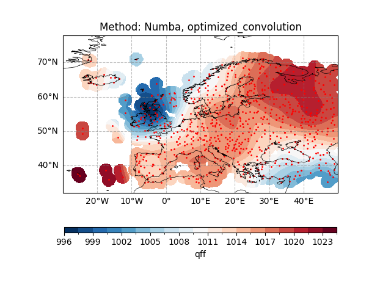
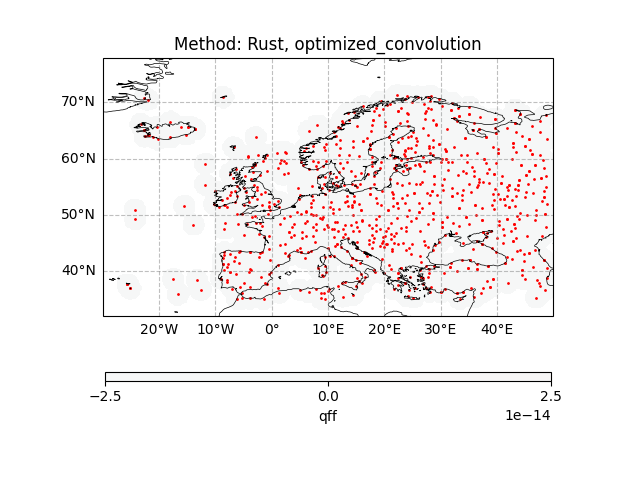
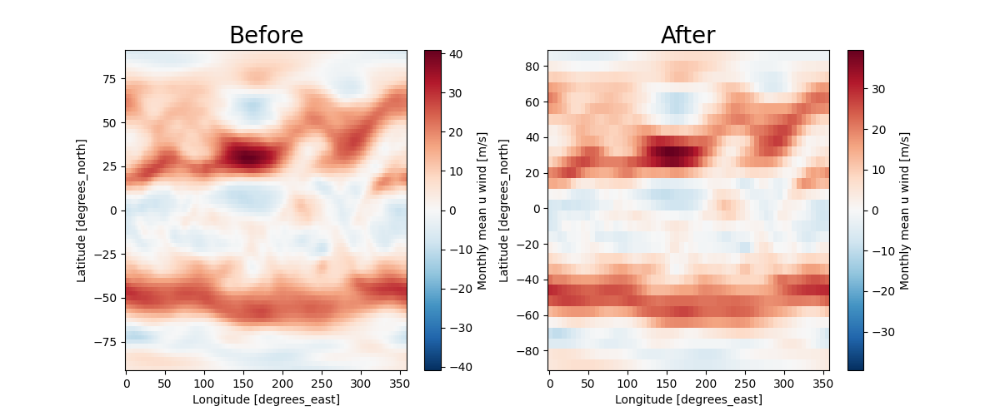
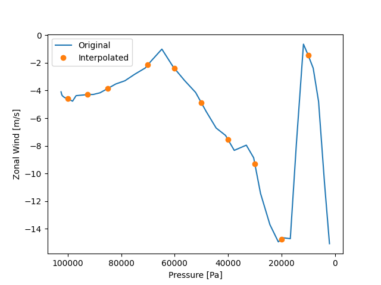
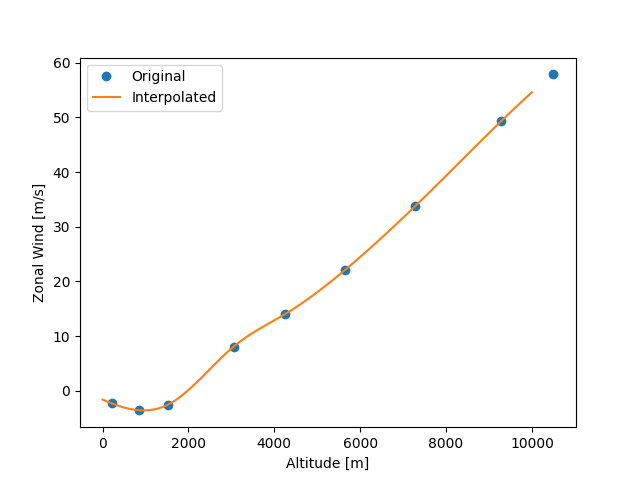

Note
Go to the end to download the full example code.
Interpolation and Regriding¶
Before proceeding with all the steps, first import some necessary libraries and packages
import easyclimate as ecl
import xarray as xr
import matplotlib.pyplot as plt
import cartopy.crs as ccrs
import numpy as np
Interpolation from points to grid¶
Open sample surface pressure data for the European region
Warning
Although the original version only support specific geographical domain and projection (as in Zürcher, B. K., 2023), which is fixed to the European latitudes and Lambert conformal projection and cannot be freely chosen.
However, with moderate modifications, it now supports interpolation across global regions.
Except for method "optimized_convolution_S2" in the function easyclimate.interp.interp_spatial_barnesS2, which for objective reasons can only support interpolation for a single hemisphere (either northern or southern) and cannot exceed 180 degrees across the entire interpolation longitude range.
station_data = ecl.open_tutorial_dataset("PressQFF_202007271200_872.csv")
print(station_data)
PressQFF_202007271200_872.csv ━━━━━━━━━ 100.0% • 7.7/7.7 • 77.2 MB/s • 0:00:00
kB
lat lon qff
0 43.8569 4.4064 1016.2
1 56.3265 -3.7273 995.1
2 55.7350 24.4170 1015.5
3 60.3000 -4.2000 997.8
4 57.8500 45.7667 1020.5
.. ... ... ...
867 38.8766 22.4360 1011.8
868 68.8493 28.2991 1018.2
869 39.0633 26.5983 1010.9
870 49.4464 2.1272 1009.8
871 61.3667 30.8833 1021.2
[872 rows x 3 columns]
easyclimate.interp.interp_spatial_barnes enables interpolation from site data to grid point data.
See also
Zürcher, B. K.: Fast approximate Barnes interpolation: illustrated by Python-Numba implementation fast-barnes-py v1.0, Geosci. Model Dev., 16, 1697–1711, https://doi.org/10.5194/gmd-16-1697-2023, 2023.
meshdata_numba = ecl.interp.interp_spatial_barnes(
station_data,
"qff",
lon_dim="lon",
lat_dim="lat",
grid_res_deg=0.25,
sigma_deg=0.5,
influence_radius_deg=None, # Default = 4*sigma
mask_radius_deg=None, # Default = influence radius
method="optimized_convolution",
buffer_deg=5.0,
)
meshdata_numba
Or use functions easyclimate.interp.interp_spatial_barnes_rs accelerated by Rust
meshdata_rust = ecl.interp.interp_spatial_barnes_rs(
station_data,
"qff",
lon_dim="lon",
lat_dim="lat",
grid_res_deg=0.25,
sigma_deg=0.5,
influence_radius_deg=None, # Default = 4*sigma
mask_radius_deg=None, # Default = influence radius
method="optimized_convolution",
buffer_deg=5.0,
)
meshdata_rust
Plotting interpolated grid point data and corresponding station locations
fig, ax = plt.subplots(subplot_kw={"projection": ccrs.PlateCarree(central_longitude=0)})
ax.gridlines(draw_labels=["bottom", "left"], color="grey", alpha=0.5, linestyle="--")
ax.coastlines(edgecolor="black", linewidths=0.5)
ax.set_extent([-30, 50, 32, 75])
# Draw interpolation results
meshdata_numba.plot.contourf(
ax=ax,
transform=ccrs.PlateCarree(),
cbar_kwargs={"location": "bottom", "aspect": 50, "shrink": 0.9},
cmap="RdBu_r",
levels=21,
)
# Draw observation stations
ax.scatter(station_data["lon"], station_data["lat"], s=1, c="r", transform=ccrs.PlateCarree())
ax.set_title("Method: Numba, optimized_convolution")

Text(0.5, 1.0, 'Method: Numba, optimized_convolution')
Next, we consider the results obtained using Rust.
fig, ax = plt.subplots(subplot_kw={"projection": ccrs.PlateCarree(central_longitude=0)})
ax.gridlines(draw_labels=["bottom", "left"], color="grey", alpha=0.5, linestyle="--")
ax.coastlines(edgecolor="black", linewidths=0.5)
ax.set_extent([-30, 50, 32, 75])
# Draw interpolation results
meshdata_rust.plot.contourf(
ax=ax,
transform=ccrs.PlateCarree(),
cbar_kwargs={"location": "bottom", "aspect": 50, "shrink": 0.9},
cmap="RdBu_r",
levels=21,
)
# Draw observation stations
ax.scatter(station_data["lon"], station_data["lat"], s=1, c="r", transform=ccrs.PlateCarree())
ax.set_title("Method: Rust, optimized_convolution")
Text(0.5, 1.0, 'Method: Rust, optimized_convolution')
Now, when we compare the computational results of the two, we can see that only the machine precision differs.
fig, ax = plt.subplots(subplot_kw={"projection": ccrs.PlateCarree(central_longitude=0)})
ax.gridlines(draw_labels=["bottom", "left"], color="grey", alpha=0.5, linestyle="--")
ax.coastlines(edgecolor="black", linewidths=0.5)
ax.set_extent([-30, 50, 32, 75])
# Draw interpolation results
(meshdata_rust - meshdata_numba).plot.contourf(
ax=ax,
transform=ccrs.PlateCarree(),
cbar_kwargs={"location": "bottom", "aspect": 50, "shrink": 0.9},
cmap="RdBu_r"
)
# Draw observation stations
ax.scatter(station_data["lon"], station_data["lat"], s=1, c="r", transform=ccrs.PlateCarree())
ax.set_title("Method: Rust, optimized_convolution")

Text(0.5, 1.0, 'Method: Rust, optimized_convolution')
Regriding¶
Reading example raw grid data
Define the target grid (only for latitude/longitude and regular grids)
target_grid = xr.DataArray(
dims=("lat", "lon"),
coords={
"lat": np.arange(-89, 89, 6) + 1 / 1.0,
"lon": np.arange(-180, 180, 6) + 1 / 1.0,
},
)
easyclimate.interp.interp_mesh2mesh performs a regridding operation.
/home/runner/work/easyclimate/easyclimate/src/easyclimate/interp/mesh2mesh.py:99: UserWarning: It seems that the input data longitude range is from -180° to 180°. Currently automatically converted to it from 0° to 360°.
warnings.warn(
Plotting differences before and after interpolation
fig, ax = plt.subplots(1, 2, figsize=(12, 5))
u_data.sel(level=500).isel(time=0).plot(ax=ax[0])
ax[0].set_title("Before", size=20)
regriding_data.sel(level=500).isel(time=0).plot(ax=ax[1])
ax[1].set_title("After", size=20)

Text(0.5, 1.0, 'After')
Interpolation from model layers to altitude layers¶
Suppose the following data are available
uwnd_data = xr.DataArray(
np.array([ -15.080393 , -10.749071 , -4.7920494, -2.3813725, -1.4152431,
-0.6465206, -7.8181705, -14.718096 , -14.65539 , -14.948015 ,
-13.705519 , -11.443476 , -8.865583 , -7.9528713, -8.329103 ,
-7.2445316, -6.7150173, -5.5189686, -4.139448 , -3.2731838,
-2.2931194, -1.0041752, -1.8983078, -2.3674374, -2.8203106,
-3.2940865, -3.526329 , -3.8654022, -4.164995 , -4.2834396,
-4.2950516, -4.3438225, -4.3716908, -4.7688255, -4.6155453,
-4.5528393, -4.4831676, -4.385626 , -4.2950516, -4.0953217]),
dims=("model_level",),
coords={
"model_level": np.array([ 36, 44, 51, 56, 60, 63, 67, 70, 73, 75, 78, 81, 83,
85, 88, 90, 92, 94, 96, 98, 100, 102, 104, 105, 107, 109,
111, 113, 115, 117, 119, 122, 124, 126, 129, 131, 133, 135, 136,
137])
},
)
p_data = xr.DataArray(
np.array([ 2081.4756, 3917.6995, 6162.6455, 8171.3506, 10112.652 ,
11811.783 , 14447.391 , 16734.607 , 19317.787 , 21218.21 ,
24357.875 , 27871.277 , 30436.492 , 33191.027 , 37698.96 ,
40969.438 , 44463.73 , 48191.92 , 52151.29 , 56291.098 ,
60525.63 , 64770.367 , 68943.69 , 70979.66 , 74908.17 ,
78599.67 , 82012.95 , 85122.69 , 87918.29 , 90401.77 ,
92584.94 , 95338.72 , 96862.08 , 98165.305 , 99763.38 ,
100626.21 , 101352.69 , 101962.28 , 102228.875 , 102483.055 ]),
dims=("model_level",),
coords={
"model_level": np.array([ 36, 44, 51, 56, 60, 63, 67, 70, 73, 75, 78, 81, 83,
85, 88, 90, 92, 94, 96, 98, 100, 102, 104, 105, 107, 109,
111, 113, 115, 117, 119, 122, 124, 126, 129, 131, 133, 135, 136,
137])
},
)
Now we interpolate the data located on the mode plane to the isobaric plane. Note that the units of the given isobaric surface are consistent with pressure_data.
Simply calibrate the interpolation effect.
fig, ax = plt.subplots()
ax.plot(p_data, uwnd_data, label="Original")
ax.plot(result.plev, result.data, "o", label="Interpolated")
ax.invert_xaxis()
ax.set_xlabel("Pressure [Pa]")
ax.set_ylabel("Zonal Wind [m/s]")
plt.legend()

<matplotlib.legend.Legend object at 0x7f1a5f383490>
Interpolation from pressure layers to altitude layers¶
Suppose the following data are available
z_data = xr.DataArray(
np.array([ 214.19354, 841.6774 , 1516.871 , 3055.7097 , 4260.5806 ,
5651.4194 , 7288.032 , 9288.193 , 10501.097 , 11946.71 ,
13762.322 , 16233.451 , 18370.902 , 20415.227 , 23619.033 ,
26214.322 , 30731.807 ]),
dims=("level"),
coords={
"level": np.array([ 1000., 925., 850., 700., 600., 500., 400., 300., 250.,
200., 150., 100., 70., 50., 30., 20., 10.])
},
)
uwnd_data = xr.DataArray(
np.array([ -2.3200073, -3.5700073, -2.5800018, 8.080002 , 14.059998 ,
22.119995 , 33.819992 , 49.339996 , 57.86 , 64.009995 ,
62.940002 , 49.809998 , 31.160004 , 16.59999 , 10.300003 ,
10.459991 , 9.880005 ]),
dims=("level"),
coords={
"level": np.array([ 1000., 925., 850., 700., 600., 500., 400., 300., 250.,
200., 150., 100., 70., 50., 30., 20., 10.])
},
)
Then we need to interpolate the zonal wind data (located on the isobaric surface) to the altitude layers.
target_heights = np.linspace(0, 10000, 101)
result = ecl.interp.interp1d_vertical_pressure2altitude(
z_data=z_data,
variable_data=uwnd_data,
target_heights=target_heights,
vertical_input_dim="level",
vertical_output_dim="altitude",
)
result
Now we can check the interpolation results.
plt.plot(z_data[:9], uwnd_data[:9], "o", label="Original")
plt.plot(result.altitude, result.data, label="Interpolated")
plt.xlabel("Altitude [m]")
plt.ylabel("Zonal Wind [m/s]")
plt.legend()

<matplotlib.legend.Legend object at 0x7f1a5f8aa710>
Total running time of the script: (0 minutes 14.401 seconds)